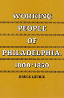

<body bgcolor="#FFFFFF" text="#000000" link="#0000FF" vlink="#CC0000" alink="#CC0000"><center><hr width="350" size="1" align="center" noshade>A "New Labor History" of the contours of working-class cultures in antebellum Philadelphia<hr width="350" size="1" align="center" noshade><p><a href="https://cdcshoppingcart.uchicago.edu/Cart/ChicagoBook.aspx?ISBN=9780877222927&&PRESS=temple" target="_top">Buy this book!</a> | <a href="https://cdcshoppingcart.uchicago.edu/Cart/Cart.aspx?PRESS=temple" target="_top">View Cart</a> | <a href="https://cdcshoppingcart.uchicago.edu/Cart/Cart.aspx?PRESS=temple" target="_top">Check Out</a></p><p></p></center><!--none//--><h1>Working People of Philadelphia, 1800-1850</h1>
<h3>Bruce Laurie</h3>
<P>paper 0-87722-292-4 $18.95, Jan 83, <FONT COLOR=#990033>Out of Stock Unavailable</FONT>
<BR></P><BLOCKQUOTE><I>"A valuable portrait of the craftsmen, journeymen, factory hands, and laborers in a major industrial city during the antebellum period. Focuses well on working conditions and on the workingman's religious and community life."</I>
<br>&#151<b><I>The New Leader</I></b><I></I></BLOCKQUOTE>
<h2>Excerpt</h2><P>Excerpt available at <a href="http://www.temple.edu/tempress">www.temple.edu/tempress</a></p>
<BR>&nbsp;<h2>Reviews</h2>
<p><I>"A fresh and generally persuasive analysis of the dynamics of the American working class in a formative period of American industrialization, an analysis that transcends the boundaries of labor organizations toward a broader social and economic perspective. It deserves close attention."</I>
<br>&#151<b><I>Winterthur Portfolio</I></b>
<p><I>"Bruce Laurie's illumination of the contours of working class culture in antebellum Philadelphia is a tour de force in the rapidly maturing literature of the 'new' social history...."</I>
<br>&#151<b><I>Pennsylvania History</I></b>
<BR>&nbsp;<h2>Contents</h2><P>
<p>Acknowledgments
<br>Introduction
<p><b>Part I: The Work Setting, 1800-1850</b>
<br>1. The Sources of Industrial Diversity
<p><b>Part II: The Forging of Working-Class Cultures, 1820-1837</b>
<br>2. Revivalists: The Militias of Christ
<br>3. Traditionalists: "The Boys of Pleasure"
<br>4. Radicals: Thomas Paine's Progeny
<br>5. "We Are All Day Laborers": The General Trades' Union of the City and County of Philadelphia, 1833-1837
<p><b>Part III: Hard Times, 1837-1844</b>
<br>6. "The Uses of Adversity"
<p><b>Part IV: Years of Discord, 1845-1850</b>
<br>7. Workers at Bay
<br>8. Varieties of Radicalism
<p><b>Part V: Epilogue</b>
<br>9. Radicalism United and Divided
<p>Notes
<br>Bibliography
<br>Index
</P><BR>&nbsp;<H2>About the Author(s)</H2>
<P><b>Bruce Laurie</b> is Professor and Director of the History Institute, University of Massachusetts, Amherst.</P>
<BR><H2>Subject Categories</H2>
<p><A HREF="/tempress/history.html" TARGET="_top">History</a>
<BR><A HREF="/tempress/labor.html" TARGET="_top">Labor Studies and Work</a>
<BR><A HREF="/tempress/philly.html" TARGET="_top">Philadelphia Region</a>
</p>
<p align="center"><a href="https://cdcshoppingcart.uchicago.edu/Cart/ChicagoBook.aspx?ISBN=9780877222927&&PRESS=temple" target="_top">Buy this book!</a> | <a href="https://cdcshoppingcart.uchicago.edu/Cart/Cart.aspx?PRESS=temple" target="_top">View Cart</a> | <a href="https://cdcshoppingcart.uchicago.edu/Cart/Cart.aspx?PRESS=temple" target="_top">Check Out</a></p><p><font face="Arial" size="1"><a href="copyright.html" onMouseOver="window.status='Web Copyright Policy';return true;" onMouseOut="window.status=''" title="Web Copyright Policy">&copy;</a> 2015 <a href="http://www.temple.edu" target="new" onMouseOver="window.status='Link to Temple University home page';return true;" onMouseOut="window.status=''" title="Link to Temple University home page">Temple University</a>. All Rights Reserved. http://www.temple.edu/tempress/titles/181_reg.html</font></p>